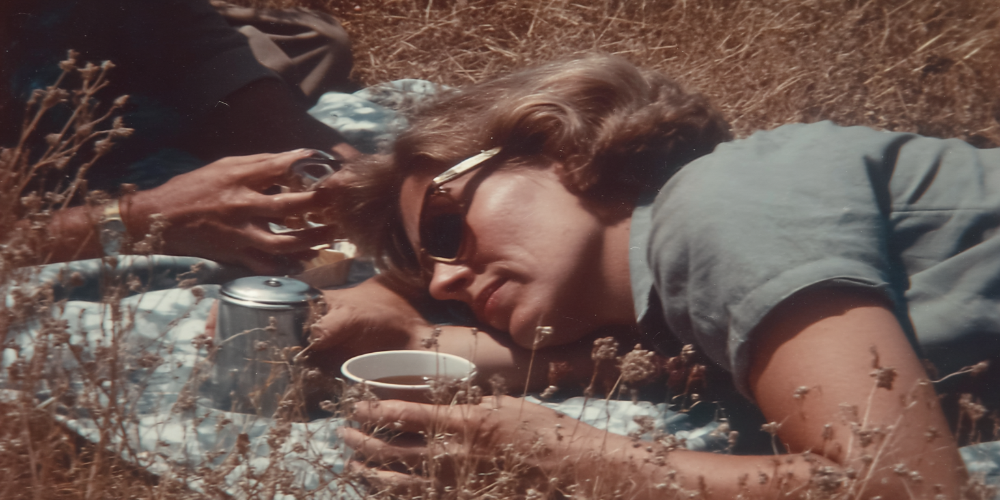
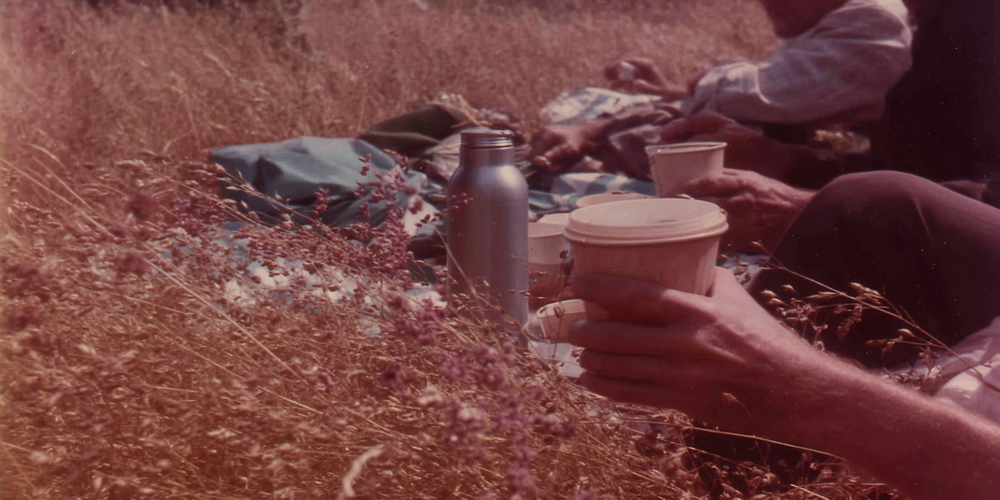
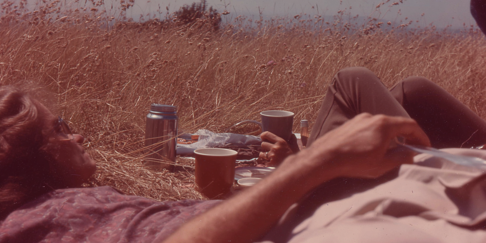
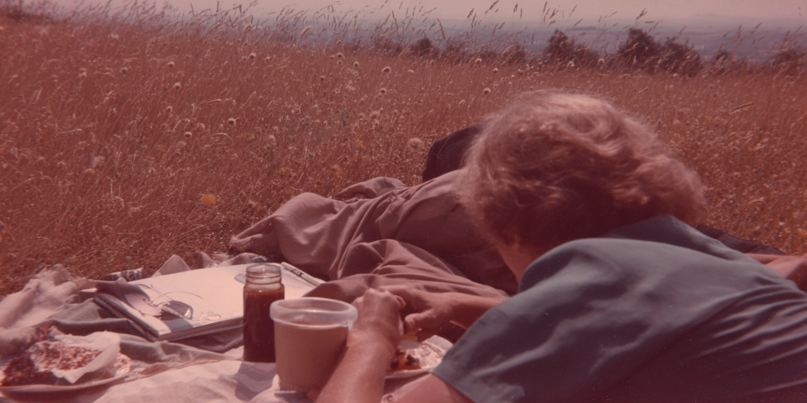
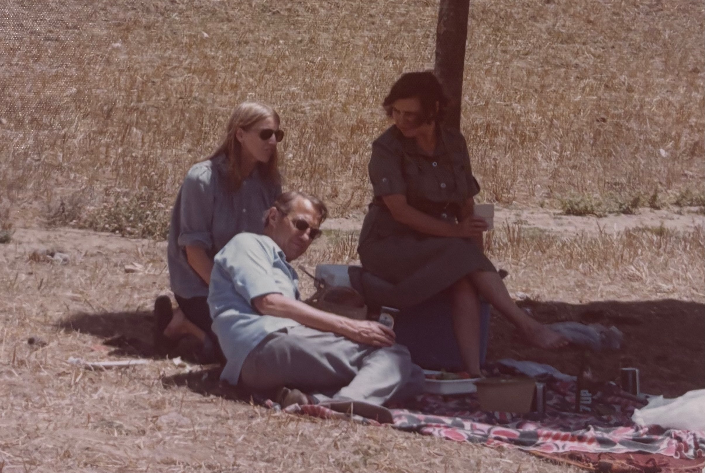

Woman lying on blanket in dry grass holding a cup, sunglasses on, picnic items nearby, warm faded film tones, vintage analog look.
Two people reclining in tall grass with metal thermos and cups, sunlit field, warm sepia tint, soft focus, vintage film aesthetic.
People lying on blanket in open grassy field with cups and jar on tray, distant landscape, faded warm tones, analog film grain.
fragmented 1970s summer memory, point of view perspective lying on a picnic blanket in dry golden grass, sun glaring overhead through half-closed eyes, wind moving through tall brittle grass, partial figures at edge of frame, hands holding paper cups, thermos lid catching sunlight, washed-out kodachrome tones, soft focus and motion blur, overexposed highlights, subtle light leaks, film grain, dust on lens, memory distortion, pieces of scene fading at edges, warmth and nostalgia mixed with slight melancholy, sensory-driven composition, shallow depth of field, dreamlike haze, analog 35mm film, imperfect framing, emotional recollection rather than documentation, hazy film
fragmented 1970s summer memory, point of view perspective lying on a picnic blanket in dry golden grass, sun glaring overhead through half-closed eyes, out onto the horizon, wind moving through tall brittle grass, partial figures at edge of frame, hands holding paper cups, thermos lid catching sunlight, washed-out kodachrome tones, soft focus and motion blur, overexposed highlights, subtle light leaks, film grain, dust on lens, memory distortion, pieces of scene fading at edges, warmth and nostalgia mixed with slight melancholy, sensory-driven composition, shallow depth of field, dreamlike haze, analog 35mm film, imperfect framing, emotional recollection rather than documentation, hazy film